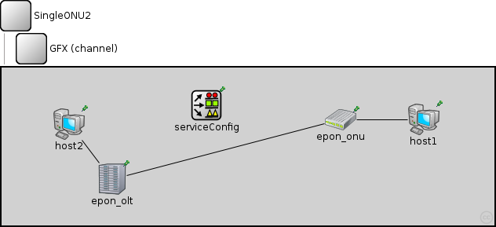
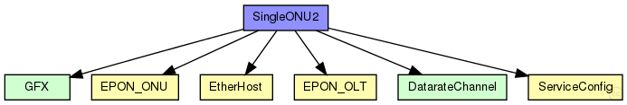
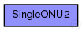

This documentation is released under the Creative Commons license
This documentation is released under the Creative Commons license(no description)
The following diagram shows usage relationships between types. Unresolved types are missing from the diagram. 
The following diagram shows inheritance relationships for this type. Unresolved types are missing from the diagram. 
| Name | Value | Description |
|---|---|---|
| isNetwork |
| Name | Type | Default value | Description |
|---|---|---|---|
| epon_onu.onu_port.epon_mac.address | string | "auto" |
MAC address as hex string (12 hex digits), or "auto". "auto" values will be replaced by a generated MAC address in init stage 0. |
| epon_onu.onu_port.epon_mac.txQueueLimit | int | 2 |
maximum number of frames queued up for transmission; additional frames are dropped. Only used if queueModule=="" The 2nd frame is used in case of changing registers with MPCP ... sometimes 1 is already transmitted and the next MPCP decides to transmitt again with the new times. |
| epon_onu.onu_port.epon_mac.queueModule | string | "" |
name of optional external queue module |
| epon_onu.onu_port.epon_mac.mtu | int | 1500 | |
| epon_onu.onu_port.onu_Q_mgmt.regTimeOut | int | ||
| epon_onu.onu_port.onu_Q_mgmt.queueLimit | int | ||
| epon_onu.onu_port.onu_Q_mgmt.statsGranularity | double | ||
| epon_onu.epon_ONU_relay.addressTableFile | string | ||
| epon_onu.epon_ONU_relay.addressTableSize | int | ||
| epon_onu.epon_ONU_relay.agingTime | double | ||
| epon_onu.mac.address | string | "auto" |
MAC address as hex string (12 hex digits), or "auto". "auto" values will be replaced by a generated MAC address in init stage 0. |
| epon_onu.mac.txrate | double | 100Mbps |
maximum data rate supported by this station (bit/s); actually chosen speed may be lower due to auto- configuration. 0 means fully auto-configured. |
| epon_onu.mac.duplexEnabled | bool | true |
whether duplex mode can be enabled or not; whether MAC will actually use duplex mode depends on the result of the auto-configuration process (duplex is only possible with DTE-to-DTE connection). |
| epon_onu.mac.txQueueLimit | int | 1000 |
maximum number of frames queued up for transmission; additional frames are dropped. Only used if queueModule=="" |
| epon_onu.mac.queueModule | string | "" |
name of optional external queue module |
| epon_onu.mac.mtu | int | 1500 | |
| host1.cli.destAddress | string | "" |
destination MAC address, or module path name of destination station; empty means off |
| host1.cli.startTime | double | this.waitTime |
time of sending the first request |
| host1.cli.waitTime | double | uniform(0s,1s) |
interval between sending requests |
| host1.cli.reqLength | int | 100B |
length of request packets |
| host1.cli.respLength | int | 1KB |
length of response packets |
| host1.mac.promiscuous | bool | false |
if true, all packets are received, otherwise only the ones with matching destination MAC address |
| host1.mac.address | string | "auto" |
MAC address as hex string (12 hex digits), or "auto". "auto" values will be replaced by a generated MAC address in init stage 0. |
| host1.mac.txrate | double | 100Mbps |
maximum data rate supported by this station (bit/s); actually chosen speed may be lower due to auto- configuration. 0 means fully auto-configured. |
| host1.mac.duplexEnabled | bool | true |
whether duplex mode can be enabled or not; whether MAC will actually use duplex mode depends on the result of the auto-configuration process (duplex is only possible with DTE-to-DTE connection). |
| host1.mac.txQueueLimit | int | 1000 |
maximum number of frames queued up for transmission; additional frames are dropped. Only used if queueModule=="" |
| host1.mac.mtu | int | 1500 | |
| host2.cli.destAddress | string | "" |
destination MAC address, or module path name of destination station; empty means off |
| host2.cli.startTime | double | this.waitTime |
time of sending the first request |
| host2.cli.waitTime | double | uniform(0s,1s) |
interval between sending requests |
| host2.cli.reqLength | int | 100B |
length of request packets |
| host2.cli.respLength | int | 1KB |
length of response packets |
| host2.mac.promiscuous | bool | false |
if true, all packets are received, otherwise only the ones with matching destination MAC address |
| host2.mac.address | string | "auto" |
MAC address as hex string (12 hex digits), or "auto". "auto" values will be replaced by a generated MAC address in init stage 0. |
| host2.mac.txrate | double | 100Mbps |
maximum data rate supported by this station (bit/s); actually chosen speed may be lower due to auto- configuration. 0 means fully auto-configured. |
| host2.mac.duplexEnabled | bool | true |
whether duplex mode can be enabled or not; whether MAC will actually use duplex mode depends on the result of the auto-configuration process (duplex is only possible with DTE-to-DTE connection). |
| host2.mac.txQueueLimit | int | 1000 |
maximum number of frames queued up for transmission; additional frames are dropped. Only used if queueModule=="" |
| host2.mac.mtu | int | 1500 | |
| epon_olt.epon_OLT_relay.addressTableFile | string |
set to empty string if not used |
|
| epon_olt.epon_OLT_relay.addressTableSize | int |
max size of address table |
|
| epon_olt.epon_OLT_relay.agingTime | double |
max idle time for address table entries (when it expires, entry is removed from the table) |
|
| epon_olt.mac.address | string | "auto" |
MAC address as hex string (12 hex digits), or "auto". "auto" values will be replaced by a generated MAC address in init stage 0. |
| epon_olt.mac.txrate | double | 100Mbps |
maximum data rate supported by this station (bit/s); actually chosen speed may be lower due to auto- configuration. 0 means fully auto-configured. |
| epon_olt.mac.duplexEnabled | bool | true |
whether duplex mode can be enabled or not; whether MAC will actually use duplex mode depends on the result of the auto-configuration process (duplex is only possible with DTE-to-DTE connection). |
| epon_olt.mac.txQueueLimit | int | 1000 |
maximum number of frames queued up for transmission; additional frames are dropped. Only used if queueModule=="" |
| epon_olt.mac.queueModule | string | "" |
name of optional external queue module |
| epon_olt.mac.mtu | int | 1500 | |
| epon_olt.olt_if.epon_mac.address | string | "auto" |
MAC address as hex string (12 hex digits), or "auto". "auto" values will be replaced by a generated MAC address in init stage 0. |
| epon_olt.olt_if.epon_mac.txQueueLimit | int | 2 |
maximum number of frames queued up for transmission; additional frames are dropped. Only used if queueModule=="" The 2nd frame is used in case of changing registers with MPCP ... sometimes 1 is already transmitted and the next MPCP decides to transmitt again with the new times. |
| epon_olt.olt_if.epon_mac.queueModule | string | "" |
name of optional external queue module |
| epon_olt.olt_if.epon_mac.mtu | int | 1500 | |
| epon_olt.olt_if.olt_Q_mgmt.slotLength | int | ||
| epon_olt.olt_if.olt_Q_mgmt.slotNumber | int | ||
| epon_olt.olt_if.olt_Q_mgmt.regTimeInt | int | ||
| epon_olt.olt_if.olt_Q_mgmt.regAckTimeOut | int | ||
| epon_olt.olt_if.olt_Q_mgmt.queueLimit | int | ||
| epon_olt.olt_if.olt_Q_mgmt.datarateLimit | int |
Limit the assigned bandwidth to scale down the simulation |
|
| serviceConfig.services | string | "DATA" |
Service Names (whatever you like here) |
| serviceConfig.srvPrior | string | "1.0" |
Service priority. Total sum must be 1 |
| serviceConfig.vlanMap | string | "0" |
Vlan map |
| serviceConfig.msrPerFlow | string | "1000000" |
MSR per flow, default 1Mbps (-1 = Unlimited) |
| serviceConfig.mrrPerFlow | string | "1000000" |
MRR per flow, default 1Mbps (-1 = Unlimited) |
network SingleONU2 { types: channel GFX extends ned.DatarateChannel { datarate = 1Gbps; } submodules: epon_onu: EPON_ONU { @display("p=432,66"); } host1: EtherHost { @display("p=538,66"); } host2: EtherHost { @display("p=86,72"); } epon_olt: EPON_OLT { @display("p=141,142"); } serviceConfig: ServiceConfig { @display("p=261,48"); } connections: // Hosts epon_onu.ethg <--> DatarateChannel <--> host1.ethg; epon_olt.ethg <--> DatarateChannel <--> host2.ethg; epon_olt.epon <--> GFX <--> epon_onu.epon; }
This documentation is released under the Creative Commons license